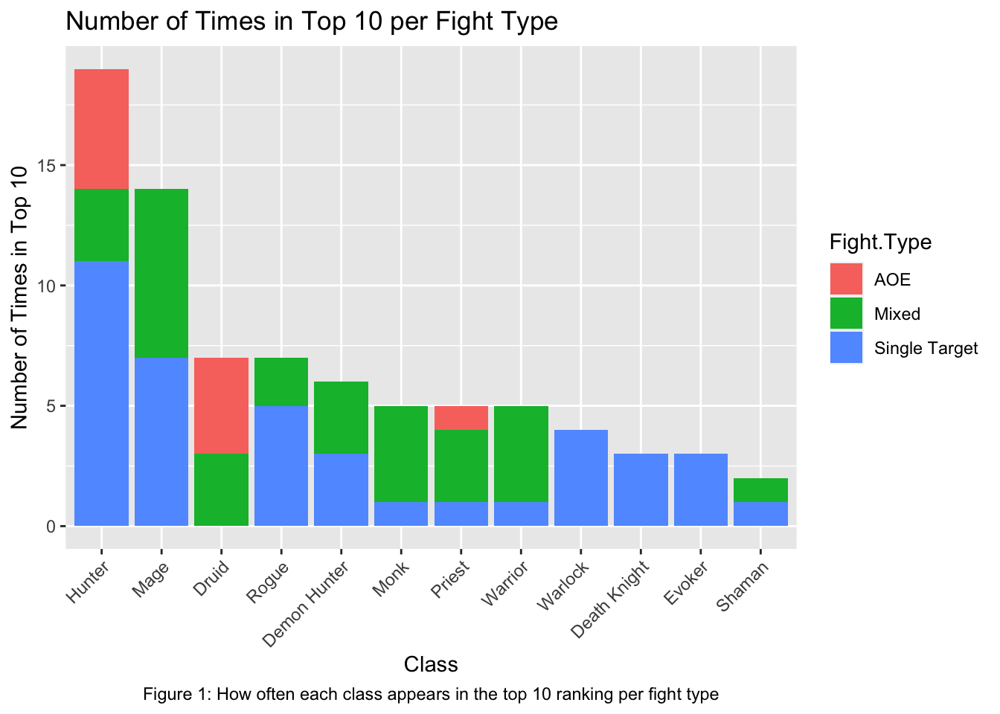
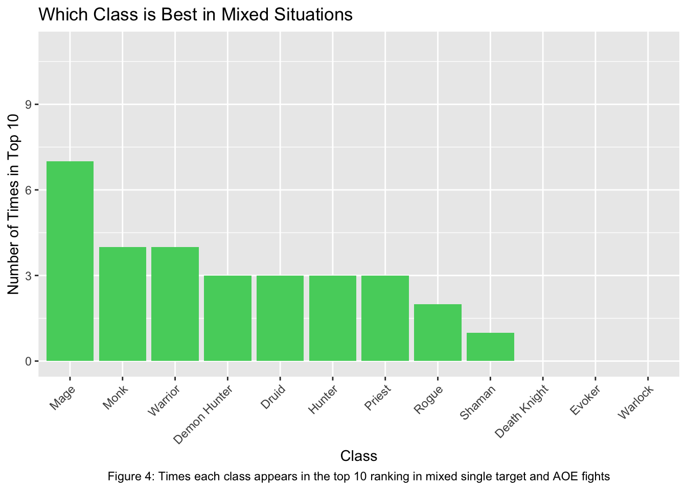

Code
suppressPackageStartupMessages(library(tidyverse))
library(tidyverse)
library(dplyr)
library(ggplot2)
library(readxl)
DPSsheet<-read.csv("DataVizMidterm - Sheet1.csv")This project takes the top 10 dps from the game World of Warcraft from the online log database for every boss fight in the raid. I then classified the bosses by whether they were AOE, Single target, or a mix. This projects goal is to analyze all of the classes in the game by the top 10 of every fight and determine which specs are good at what in the game.
suppressPackageStartupMessages(library(tidyverse))
library(tidyverse)
library(dplyr)
library(ggplot2)
library(readxl)
DPSsheet<-read.csv("DataVizMidterm - Sheet1.csv")suppressPackageStartupMessages(library(scales))
library(scales)
ggplot(DPSsheet, aes(x=Class, y=DPS)) +
geom_point() +
labs(title = "Top DPS by class", caption = "Overall dps for the top 10 of every boss in the raid") +
theme(plot.caption = element_text(hjust = .5)) +
theme(axis.text.x = element_text(angle = 45, hjust = 1)) +
scale_y_continuous(labels = scientific_format())
A point plot shows the general gist of what’s going on if I just graph them overall. You can get an idea that most specs are pretty balanced but there are some outliers here for specific events. You can’t really determine much from here because all of the bossfights are combined.
DPSsheet$Class <- factor(DPSsheet$Class)
ggplot(DPSsheet, aes(x=Boss, y=DPS, color = Class)) +
geom_point()+
labs(title = "Top DPS by class per Boss", caption = "Overall dps for the top 10 of every boss in the raid") +
theme(plot.caption = element_text(hjust = .5)) +
theme(axis.text.x = element_text(angle = 45, hjust = 1)) +
scale_y_continuous(labels = scientific_format())+
scale_color_manual(values = c("red", "#B01AAB", "orange", "#219864", "green", "#51CDCD", "#51CD92", "grey", "yellow", "blue", "purple", "brown"), drop = FALSE)
I tried adding color and specifying by the bossfight in order to show which dps was best per boss. It gets the message across better as to who is doing well and shoes outliers such as druid on primal council but there still is a lot of overlap here.
ggplot(DPSsheet, aes(x = Class, y=DPS, fill = Boss))+
geom_col(position = "stack")+
labs(title = "Top DPS by Class", caption = "How each DPS stacks up with eachother...excuse my pun") +
theme(axis.text.x = element_text(angle = 45, hjust = 1))+
theme(plot.caption = element_text(hjust = .5))
It’s easy to see in this situation that there are classes that are far better as a whole than others and you can begin to see a bit more of a division in the class balance when it comes to say, evokers versus shaman.
ggplot(DPSsheet, aes(x=Fight.Type, y=DPS, fill = Class)) +
geom_violin()+
labs(title = "Top DPS by class per Fight Type", caption = "Which dps is best based on the encounter type") +
theme(plot.caption = element_text(hjust = .5)) +
theme(axis.text.x = element_text(angle = 45, hjust = 1)) +
scale_y_continuous(labels = scientific_format())+
scale_fill_manual(values = c("red", "#B01AAB", "orange", "#219864", "green", "#51CDCD", "#51CD92", "grey", "yellow", "blue", "purple", "brown"), drop = FALSE)Warning: Groups with fewer than two data points have been dropped.
Groups with fewer than two data points have been dropped.
Groups with fewer than two data points have been dropped.
Groups with fewer than two data points have been dropped.
Groups with fewer than two data points have been dropped.
Groups with fewer than two data points have been dropped.
I wanted to show the discrepency of AOE versus single target here and show that some classes dominated but a violin plot might not be the play here.
ggplot(DPSsheet, aes(x=Fight.Type, y=DPS, color = Class)) +
geom_point()+
labs(title = "Top DPS by class per Fight Type", caption = "Which classes are best based on the encounter type") +
theme(plot.caption = element_text(hjust = .5)) +
theme(axis.text.x = element_text(angle = 45, hjust = 1)) +
scale_y_continuous(labels = scientific_format())+
scale_color_manual(values = c("red", "#B01AAB", "orange", "#219864", "green", "#51CDCD", "#51CD92", "grey", "yellow", "blue", "purple", "brown"), drop = FALSE)
I think the pointplot is really getting to the…point…about which classes are really good at aoe and single target. it shows there is a vast discrepency in AOE classes but when it comes to single target they are generally similar.
ggplot(DPSsheet, aes(x=Fight.Type, y=Rank, fill = Class)) +
geom_col()+
labs(title = "Rankings Per Fight Type", caption = "DPS rankings per boss fight type") +
theme(plot.caption = element_text(hjust = .5)) +
theme(axis.text.x = element_text(angle = 45, hjust = 1)) +
scale_fill_manual(values = c("red", "#B01AAB", "orange", "#219864", "green", "#51CDCD", "#51CD92", "grey", "yellow", "blue", "purple", "brown"), drop = FALSE)
This might show it the best for which classes have the best time in which areas. You can clearly see hunters in the lead in both single target and aoe which is why they are a large outlier. As well as mages being good at single target and mixed fights. Druid may be an outlier in AOE situations but have zero single target which is why they aren’t as imbalanced.
ggplot(DPSsheet, aes(x=Class, y=Rank, fill = Fight.Type)) +
geom_col()+
labs(title = "Which DPS is Best in Each Situation", caption = "Ranking density per fight type") +
theme(plot.caption = element_text(hjust = .5)) +
theme(axis.text.x = element_text(angle = 45, hjust = 1))Here really shows the differences in class ranking based off of fight type. It gives a really good idea at who is good at what. Again as you can see hunter is good at everything and mage is a good single target as well as mixed blaster. but if you want specialized AOE or Single target there are lots of options!